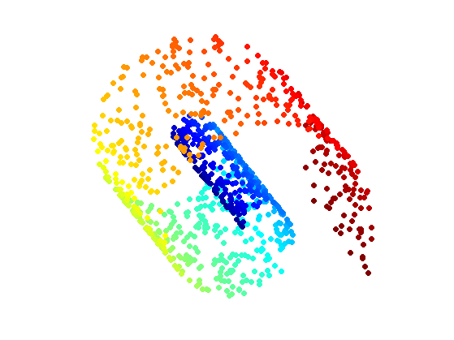
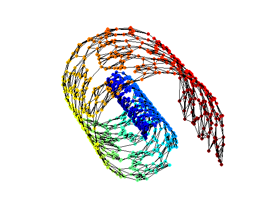
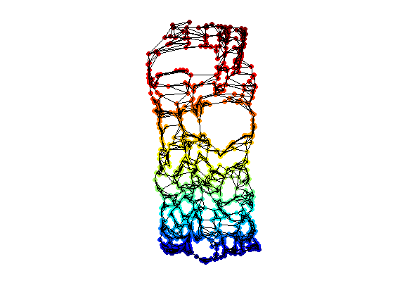
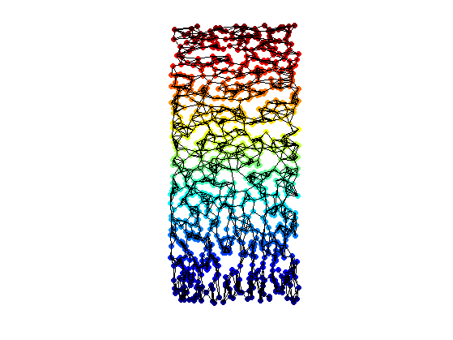
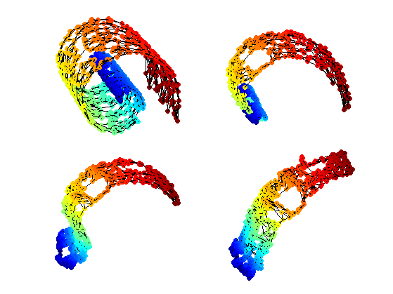
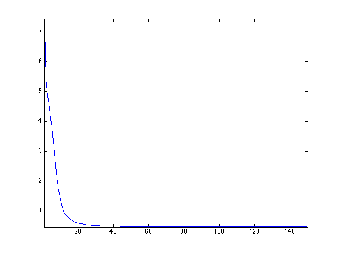
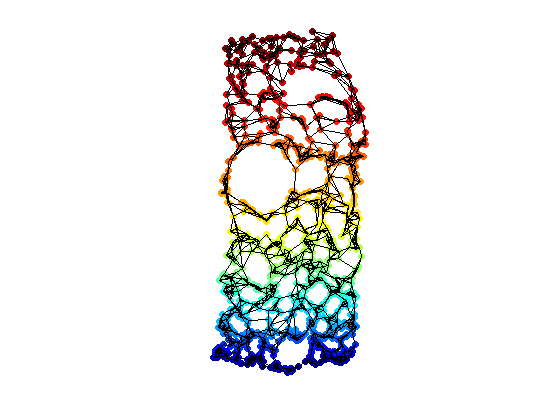

Manifold Learning with Isomap
This tour explores the Isomap algorithm for manifold learning.
Contents
The Isomap algorithm is introduced in
A Global Geometric Framework for Nonlinear Dimensionality Reduction, J. B. Tenenbaum, V. de Silva and J. C. Langford, Science 290 (5500): 2319-2323, 22 December 2000.
Installing toolboxes and setting up the path.
You need to download the following files: signal toolbox, general toolbox and graph toolbox.
You need to unzip these toolboxes in your working directory, so that you have toolbox_signal, toolbox_general and toolbox_graph in your directory.
For Scilab user: you must replace the Matlab comment '%' by its Scilab counterpart '//'.
Recommandation: You should create a text file named for instance numericaltour.sce (in Scilab) or numericaltour.m (in Matlab) to write all the Scilab/Matlab command you want to execute. Then, simply run exec('numericaltour.sce'); (in Scilab) or numericaltour; (in Matlab) to run the commands.
Execute this line only if you are using Matlab.
getd = @(p)path(p,path); % scilab users must *not* execute this
Then you can add the toolboxes to the path.
getd('toolbox_signal/'); getd('toolbox_general/'); getd('toolbox_graph/');
Graph Approximation of Manifolds
Manifold learning consist in approximating the parameterization of a manifold represented as a point cloud.
First we load a simple 3D point cloud, the famous Swiss Roll.
Number of points.
n = 1000;
Random position on the parameteric domain.
x = rand(2,n);
Mapping on the manifold.
v = 3*pi/2 * (.1 + 2*x(1,:)); X = zeros(3,n); X(2,:) = 20 * x(2,:); X(1,:) = - cos( v ) .* v; X(3,:) = sin( v ) .* v;
Parameter for display.
ms = 50; lw = 1.5; v1 = -15; v2 = 20;
Display the point cloud.
clf; scatter3(X(1,:),X(2,:),X(3,:),ms,v, 'filled'); colormap jet(256); view(v1,v2); axis('equal'); axis('off');
Compute the pairwise Euclidean distance matrix.
D1 = repmat(sum(X.^2,1),n,1); D1 = sqrt(D1 + D1' - 2*X'*X);
Number of NN for the graph.
k = 6;
Compute the k-NN connectivity.
[DNN,NN] = sort(D1); NN = NN(2:k+1,:); DNN = DNN(2:k+1,:);
Adjacency matrix, and weighted adjacency.
B = repmat(1:n, [k 1]); A = sparse(B(:), NN(:), ones(k*n,1));
Weighted adjacency (the metric on the graph).
W = sparse(B(:), NN(:), DNN(:));
Display the graph.
options.lw = lw; options.ps = 0.01; clf; hold on; scatter3(X(1,:),X(2,:),X(3,:),ms,v, 'filled'); plot_graph(A, X, options); colormap jet(256); view(v1,v2); axis('equal'); axis('off'); zoom(.8);
Floyd Algorithm to Compute Pairwise Geodesic Distances
A simple algorithm to compute the geodesic distances between all pairs of points on a graph is Floyd iterative algorithm. Its complexity is O(n^3) where n is the number of points. It is thus quite slow for sparse graph, where Dijkstra runs in O(log(n)*n^2).
Floyd algorithm iterates the following update rule, for k=1,...,n
D(i,j) <- min(D(i,j), D(i,k)+D(k,j),
with the initialization D(i,j)=W(i,j) if W(i,j)>0, and D(i,j)=Inf if W(i,j)=0.
Make the graph symmetric.
D = full(W); D = (D+D')/2;
Initialize the matrix.
D(D==0) = Inf;
Add connexion between a point and itself.
D = D - diag(diag(D));
Exercice 1: (check the solution) Implement the Floyd algorithm to compute the full distance matrix D, where D(i,j) is the geodesic distance between
exo1;
Find index of vertices that are not connected to the main manifold.
Iremove = find(D(:,1)==Inf);
Remove Inf remaining values (disconnected comonents).
D(D==Inf) = 0;
Isomap with Classical Multidimensional Scaling
Isomap perform the dimensionality reduction by applying multidimensional scaling.
Please refers to the tours on Bending Invariant for detail on Classical MDS (strain minimization).
Exercice 2: (check the solution) Perform classical MDS to compute the 2D flattening.
exo2;

Redess the points using the two leading eigenvectors of the covariance matrix (PCA correction).
[U,L] = eig(Xstrain*Xstrain' / n); Xstrain1 = U'*Xstrain;
Remove problematic points.
Xstrain1(:,Iremove) = Inf;
Display the final result of the dimensionality reduction.
clf; hold on; scatter(Xstrain1(1,:),Xstrain1(2,:),ms,v, 'filled'); plot_graph(A, Xstrain1, options); colormap jet(256); axis('equal'); axis('off');
For comparison, the ideal locations on the parameter domain.
Y = cat(1, v, X(2,:)); Y(1,:) = rescale(Y(1,:), min(Xstrain(1,:)), max(Xstrain(1,:))); Y(2,:) = rescale(Y(2,:), min(Xstrain(2,:)), max(Xstrain(2,:)));
Display the ideal graph on the reduced parameter domain.
clf; hold on; scatter(Y(1,:),Y(2,:),ms,v, 'filled'); plot_graph(A, Y, options); colormap jet(256); axis('equal'); axis('off'); camroll(90);
Isomap with SMACOF Multidimensional Scaling
It is possible to use SMACOF instead of classical scaling.
Please refers to the tours on Bending Invariant for detail on both Classical MDS (strain minimization) and SMACOF MDS (stress minimization).
Exercice 3: (check the solution) Perform stress minimization MDS using SMACOF to compute the 2D flattening.
exo3;
Plot stress evolution during minimization.
clf; plot(stress(1:end), '.-'); axis('tight');
Compute the main direction of the point clouds.
[U,L] = eig(Xstress*Xstress' / n); [L,I] = sort(diag(L)); U = U(:,I(2:3));
Project the points on the two leading eigenvectors of the covariance matrix (PCA final projection).
Xstress1 = U'*Xstress;
Remove problematic points.
Xstress1(:,Iremove) = Inf;
Display the final result of the dimensionality reduction.
clf; hold on; scatter(Xstress1(1,:),Xstress1(2,:),ms,v, 'filled'); plot_graph(A, Xstress1, options); colormap jet(256); axis('equal'); axis('off');
Learning Manifold of Patches
Isomap algorithm can be used to analyze the structure of a high dimensional library of images.
Exercice 4: (check the solution) Apply Isomap to a library of small images, for instance binary digits or faces with a rotating camera.
exo4;